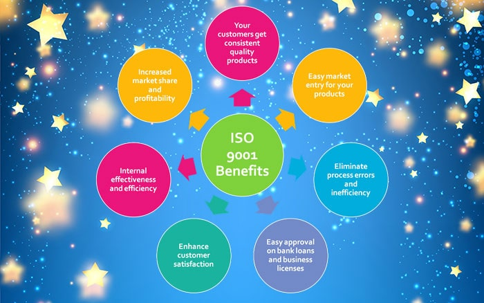
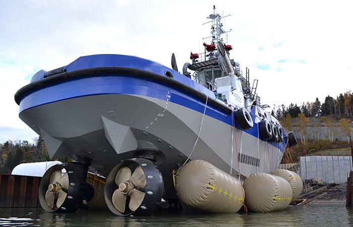
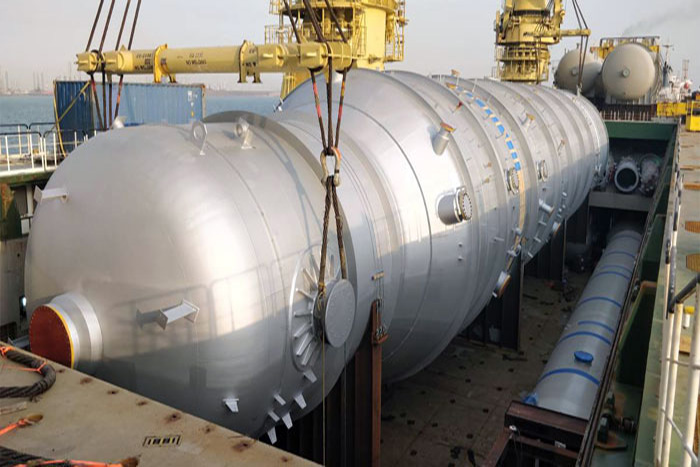
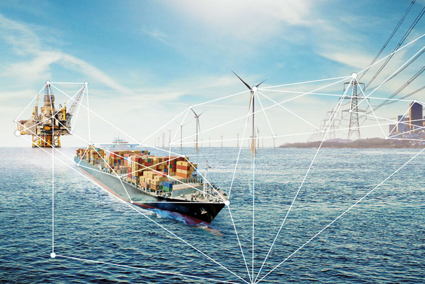

Pre-loading surveys are entirely depending on the vessel’s Master and his cargo officer/chief officer’s experience and the company insurance depar...

Although a draught survey is considered simple in principle, experienced surveyors will not hesitate to put forth that in practice, the process is rather complicated, involves numerous factors, and only with ade...
It comes as no surprise, that after over two thousands of P&I surveys and 14 years of attendances, Constellation Marine services are well recognized in their contribution within the gamut of P&I surveys, be...

The Incident of the EVER GIVEN has brought to the forefront a rather unique Maritime implication, which is the unprecedented disruption of the Maritime Supply Chain and the phenomenal economic fallout created, already exasperated by the cu...

Before we react in hindsight for an incident that has been escalated to a point of no return, another Master ends up being blamed for “doing his job”. Let’s put some thoughts together to understand how and why one should avoid “judging” the Ma...
We at Constellation have a long track to oversee the pollution
aspects of the ship.
We are authorized to work as safety officers on board ships
on behalf of the Dubai Maritime Authority...
As per TRAKHEES the Ports Custom and Freezone arm of the Dubai Ports Authority it is mandated to have a safety officer on board non-conventional tankers in port while the vessel is loading or discharging cargo. These are those tankers which do not, as an exampl...
The IMO cap is on the emissions per ship rather than on the industry’s total emissions. IMO has mandated it as CO2 emissions per transport wo...

The focus of this paper is to highlight the ever-increasing reliance on letter of indemnities being offered and accepted without fully comprehending its purpose and enforceability from the perspective of the P&I clubs and the law...

It is well known that manufacturing companies have adopted quality standards for a long period of time. It’s benefits such as but not limited to...

Tugs are also used for pushing and pulling non propelled barge. The size of the barges pulled or pushed depend on the horsepower of the engines of the tugs. Tugs are also used for providing logistic supp...

The very existence of ships depends on the cargo they carry; while ship design and operation has evolved to high levels of sophistication and impetus on safety, cargo handling still remains an act...
Bunkering of heavy oil for a ship is in Metric tonnes. The heavy oil is the bottom most grade coming out from the distilling tower coming out from a refinery...
The pre stowage plan prepared was to have the pipes loaded in tiers, 9 high for the center stack, and 6 high on the end stacks, due to the restriction of the extended coamings forward and aft of each hatch....
It could be towing of deck loading dump barge, barge with deck mounted heavy lift crane or if you are looking for hiring a towing tug for non-prop...
A 99K DWT tanker vessel was presented for inspection upon completion of its first foot loading of a cargo of gasoline...

It is quite clear that there are two principal methods of compliance with Sulphur Cap – the use of compliant fuel, eg LSFO with a Sulphur content which does not exce...

Heavy lift operations are one of the critical operations that needs the combination of knowledge and experience. The most primary and basic informat...
The purpose of noise level survey onboard ships is to provide a safe working condition by taking into consideration the need for verbal communicati...

At constellation marine services, our interest in advanced inspection technologies is on the rise. Increasing complexity of marine and offshore assets and associa...
1 2